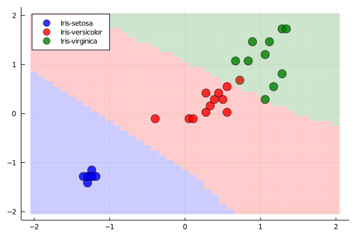
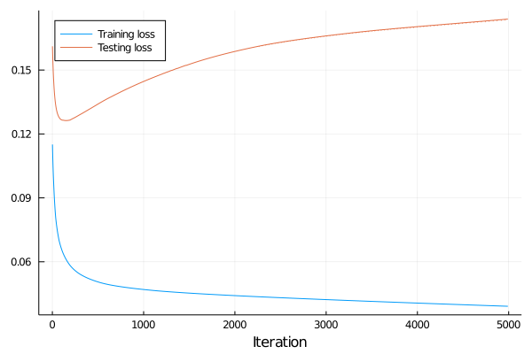
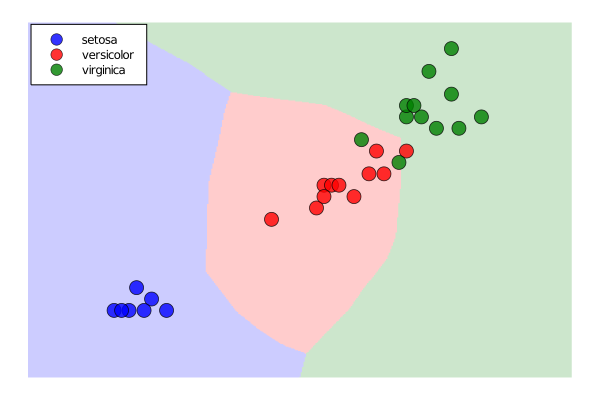
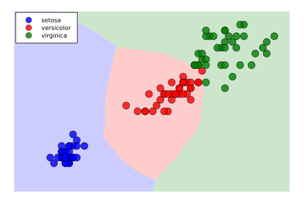

Exercises
Perform an analysis of hyperparameters of the neural network from this lecture. Examples may include network architecture, learning rate (stepsize), activation functions or normalization.
Write a short summary (in LaTeX) of your suggestions.
Keyword arguments (often denoted as kwargs but any name may be used) specify additional arguments which do not need to be used when the function is called. We recall the prepare_data function written earlier.
function prepare_data(X, y; do_normal=true, do_onehot=true, kwargs...)
X_train, y_train, X_test, y_test = split(X, y; kwargs...)
if do_normal
X_train, X_test = normalize(X_train, X_test; kwargs...)
end
classes = unique(y)
if do_onehot
y_train = onehot(y_train, classes)
y_test = onehot(y_test, classes)
end
return X_train, y_train, X_test, y_test, classes
endAll keyword arguments kwargs will be passed to the split and normalize functions. The benefit is that we do not need to specify the keyword arguments for split in prepare_data.
Recall that split takes ratio_split as an optional argument. Write a one-line function ratio_train which gets the training and testing sets and computes the ratio of samples in the training set. Then call the prepare_data with:
- no normalization and the default split ratio;
- normalization and the split ratio of 50/50;
Solution:
The ratio_train function reads:
ratio_train(X_train, X_test) = size(X_train, 2) / (size(X_train,2) + size(X_test,2))The first case uses the default ratio; hence we do not pass ratio_split. Since we do not want to use normalization, we need to pass do_normal=false.
X_train, y_train, X_test, y_test, classes = prepare_data(X', y; dims=2, do_normal=false)
println("Ratio train/test = ", ratio_train(X_train, X_test))Ratio train/test = 0.8
The second case behaves the other way round. We use the default normalization; thus, we do not need to specify do_normal=true (even though it may be a good idea). We need to pass ratio_train=0.5.
X_train, y_train, X_test, y_test, classes = prepare_data(X', y; dims=2, ratio_train=0.5)
println("Ratio train/test = ", ratio_train(X_train, X_test))Ratio train/test = 0.5
The goal of the following exercise is to show the prediction function graphically. For this reason, we will consider only two features. All the following exercises use the data with the fixed seed for reproducibility.
Random.seed!(666)
X_train, y_train, X_test, y_test, classes = prepare_data(X[:,3:4]', y; dims = 2)Use the same training procedure for 1000 iterations to train the classifier with the new data. Then plot a graph depicting which classes are predicted at subregions of $[-2,2]\times [-2,2]$. Moreover, depict the testing data in this graph.
Hint: use the heatmap function.
Solution:
The procedure for training the network is the same as during the lecture.
m = SimpleNet(size(X_train,1), 5, size(y_train,1))
α = 1e-1
max_iter = 1000
for iter in 1:max_iter
grad_all = [grad(m, X_train[:,k], y_train[:,k]) for k in 1:size(X_train,2)]
grad_mean = mean_tuple(grad_all)
m.W1 .-= α*grad_mean[2]
m.b1 .-= α*grad_mean[3]
m.W2 .-= α*grad_mean[4]
m.b2 .-= α*grad_mean[5]
endThe prediction function is m([x;y]). Since this creates a one-hot representation, we need to convert it into a one-cold representation. However, it is not possible to use onecold(m([x; y]), classes), which would result in one of the three string labels. We need to use onecold(m([x; y]), 1:3) to convert it to a real number. Then we call the heatmap function. Since we will later use plotting in a loop, we assign the graph to plt.
colours = [:blue, :red, :green]
xs = -2:0.01:2
plt = heatmap(xs, xs, (x, y) -> onecold(m([x; y]), 1:3)[1];
color = colours,
opacity = 0.2,
axis = false,
ticks = false,
cbar = false,
legend = :topleft,
)To add the predictions of the testing set, we find the indices inds of samples from each class. Then we add them via the scatter! plot. We keep colours from the previous part to have the same colours. Since we plotted in a loop, we need to display the plot.
for (i, class) in enumerate(classes)
inds = findall(onecold(y_test, classes) .== class)
scatter!(plt, X_test[1, inds], X_test[2, inds];
label = class,
marker=(8, 0.8, colours[i]),
)
end
display(plt)
This exercise shows the well-known effect of overfitting. Since the model sees only the training set, it may fit it too perfectly (overfit it) and generalize poorly to the testing set of unseen examples.
Consider the same data as in the previous exercise but train a network with 25 hidden neurons for 25000 iterations. Plot the loss function values on the training and testing sets. Then plot the same prediction visualization as in the previous exercise for both testing and training sets. Describe what went wrong.
Solution:
We first specify the loss function.
loss(X, y; ϵ = 1e-10) = mean(-sum(y .* log.(m(X) .+ ϵ); dims = 1))Then we train the network as before. The only change is that we need to save the training and testing objective.
m = SimpleNet(size(X_train,1), 25, size(y_train,1))
α = 1e-1
max_iter = 25000
L_train = zeros(max_iter)
L_test = zeros(max_iter)
for iter in 1:max_iter
grad_all = [grad(m, X_train[:,k], y_train[:,k]) for k in 1:size(X_train,2)]
grad_mean = mean_tuple(grad_all)
m.W1 .-= α*grad_mean[2]
m.b1 .-= α*grad_mean[3]
m.W2 .-= α*grad_mean[4]
m.b2 .-= α*grad_mean[5]
L_train[iter] = loss(X_train, y_train)
L_test[iter] = loss(X_test, y_test)
endThen we plot it. We ignore the first nine iterations, where the loss is large there. We see the classical procedure of overfitting. While the loss function on the training set decreases steadily, on the testing set, it decreases first, and after approximately 100 iterations, it starts increasing. This behaviour may be prevented by several techniques, which we discuss in the following lecture.
plot(L_train[10:end], xlabel="Iteration", label="Training loss", legend=:topleft)
plot!(L_test[10:end], label="Testing loss")
We create the contour plot in the same way as in the previous exercise.
plt = heatmap(xs, xs, (x, y) -> onecold(m([x; y]), 1:3)[1];
color = colours,
opacity = 0.2,
axis = false,
ticks = false,
cbar = false,
legend = :topleft,
)
for (i, class) in enumerate(classes)
inds = findall(onecold(y_test, classes) .== class)
scatter!(plt, X_test[1, inds], X_test[2, inds];
label = class,
marker=(8, 0.8, colours[i]),
)
end
display(plt)
plt = heatmap(xs, xs, (x, y) -> onecold(m([x; y]), 1:3)[1];
color = colours,
opacity = 0.2,
axis = false,
ticks = false,
cbar = false,
legend = :topleft,
)
for (i, class) in enumerate(classes)
inds = findall(onecold(y_train, classes) .== class)
scatter!(plt, X_train[1, inds], X_train[2, inds];
label = class,
marker=(8, 0.8, colours[i]),
)
end
display(plt)
The separation on the testing set is quite good, but it could be better for the two bottommost green circles (iris virginica). The model predicted (in the background) the red colour (iris versicolor) there. This is wrong. The reason is clear from the picture depicting the training set. The classifier tried to perfectly fit the boundary between the green and red points, making an outward-pointing tip. This is precisely overfitting and the reason for the misclassification on the testing set.
The contour plots from Exercises 2 and 3 are strikingly different, especially in the top-left and bottom-right corners. Why is that?
Solution:
Since the dataset does not contain any data in the top-left or bottom-right corners, it does not know what to predict. From its perspective, both separations are very good.
If a classifier does not have any data in some region, it may predict anything there, including predictions with no sense.
Proof the theorem about universal approximation of neural networks.
Solution:
Since piecewise linear functions are dense in the set of continuous functions, there is a piecewise linear function $h$ such that $\|h-g\|_{\infty}\le \varepsilon$. Assume that $h$ has kinks at $x_1<\dots<x_n$ with function values $h(x_i)=y_i$ for $i=1,\dots,n$. Defining
\[d_i = \frac{y_{i+1}-y_i}{x_{i+1}-x_i},\]
then $h$ has the form
\[h(x) = y_i + d_i(x-x_i) \qquad\text{ for }x\in [x_i,x_{i+1}].\]
It is not difficult to show that
\[h(x) = y_1 + \sum_{i=1}^n(d_i-d_{i-1})\operatorname{max}\{x-x_i,0\},\]
where we defined $d_0=0$.
Then $h$ can be represented as the following network with two layers:
- Dense layer with $n$ hidden neurons and ReLU activation function. Neuron $i$ has weight $1$ and bias $-x_i$.
- Dense layer with $1$ output neurons and identity activation function. Connection $i$ has weight $d_i-d_{i-1}$ and the joint bias is $y_1$.
This finishes the proof.